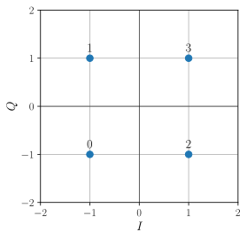

Modulation sur porteuse¶
Une modulation sur porteuse permet de générer un signal dont la bande passante est presque entièrement incluse dans une bande de fréquence éloignée du 0 Hz. En particulier, les modulations PAM sur porteuse affectent à chaque symbole du message une sinusoïde de fréquence \(f_p\) dont la phase et l’amplitude dépendent du symbole. Cela est équivalent à considérer que la modulation sur porteuse revient à deux modulations en bande de base multipliées par des porteuses sinusoïdales de même fréquence \(f_p\) en quadrature de phase :
Pour réaliser une modulation sur porteuse, il faut donc définir la forme d’onde \(h(t)\), la fréquence de la porteuse \(f_p\) et les amplitudes \(\alpha_k\) et \(\beta_k\).
Dans un premier temps, on considère que la forme d’onde est la même que celle de la modulation NRZ (porte de durée \(T\)).
Par commodité, on définit plutôt une unique amplitude complexe \(A_k = \alpha_k+j\beta_k\) plutôt que deux amplitudes réelles \(\alpha_k\) et \(\beta_k\). Et comme en plus les modulations sur porteuse sont très souvent utilisées dans le cas de signaux \(M\)-aires avec \(M\) grand, on préfère représenter les amplitudes \(A_k\) graphiquement (dans le plan complexe) plutôt que sous la forme d’un tableau qui pourrait être très long. Cette représentation graphique s’appelle une constellation. C’est un graphe 2D où chaque point correspond à un symbole dont les coordonnées sont les amplitudes \(\alpha_k\) et \(\beta_k\). Les axes sont donc nommés \(I\) (pour in-phase component) et \(Q\) (pour quadrature component).
La modulation 4-QAM est une modulation 4-aire dont le tableau de correspondance est :
\(m_k\) |
\(\alpha_k\) |
\(\beta_k\) |
\(A_k=\alpha_k+j\beta_k\) |
|---|---|---|---|
\(0\) |
\(+1\) |
\(+1\) |
\(-1+j\) |
\(1\) |
\(-1\) |
\(+1\) |
\(1+j\) |
\(2\) |
\(-1\) |
\(-1\) |
\(1-j\) |
\(3\) |
\(+1\) |
\(-1\) |
\(-1-j\) |
La constellation associée est la suivante :
{kind=link}
Chaque point de la constellation correspond à une amplitude des composantes en phase et en quadrature, lesquelles sont directement reliées à l’énergie du signal. Par conséquent, l’énergie du signal est directement reliée au module des points de la constellation. En d’autres termes, plus l’espace occupé par la constellation est important, plus l’énergie nécessaire pour générer le signal modulé est importante.
Modulation à déplacement d’amplitude¶
Dans une modulation à déplacement d’amplitude (ASK pour amplitude shift keying), tous les symboles sont associés à une sinusoïde de même phase.
Ainsi, si \(\alpha_k\) varie et \(\beta_k=0\), alors chaque symbole est codé par un cosinus. À l’inverse, si \(\alpha_k=0\) et \(\beta_k\) varie, alors chaque symbole est codé par un sinus. En fait, toute constellation dont les points sont alignés sur une droite passant par l’origine est une modulation ASK (cela se vérifie en utilisant les règles de trigonométrie).
{kind=link}
{kind=link}
Modulation à déplacement de phase¶
Dans une modulation à déplacement de phase (PSK pour phase shift keying), tous les symboles sont associés à une sinusoïde de même ampliltude, mais de phase différente.
Tous les points d’une constellation PSK sont répartis sur un cercle de centre l’origine. On peut le vérifier en utilisant la trigonométrie, mais aussi parce que l’amplitude complexe \(A_k\) peut s’écrire sous la forme \(\rho e^{j\theta}\) avec \(\rho\) constant.
{kind=link}
{kind=link}
Modulation d’amplitude en quadrature¶
Lorsque le nombre de symboles \(M\) devient grand, les modulations ASK et PSK ne sont plus satisfaisantes pour utiliser efficacement l’énergie émise. En effet, si les points sont éloignés les uns des autres, alors l’énergie nécessaire pour fabriquer le signal augmente. À l’inverse, si les points sont trop rapprochés, alors il y a un risque de les confondre à la réception (voir ci-après). Le mieux est donc de répartir les symboles dans la zone la plus compacte du plan tout en espaçant le plus possible les points. On ne peut donc plus se retreindre à organiser les points sur une ligne (comme la modulation ASK) ou un cercle (comme la modulation PSK).
La modulation d’amplitude en quadrature (QAM pour quadrature amplitude modulation) répond de façon simple à cette question. La Fig. 8 donne quelques exemples de modulation QAM.
Fig. 8 Exemples de modulations QAM.¶
Cas de la modulation en déplacement de fréquence¶
La modulation en déplacement de fréquence (FSK pour frequency shift keying) n’est pas une modulation d’impulsion en amplitude car elle est non linéaire. Les symboles du message sont représentés par des sinusoïdes de fréquence différente.
Code de Gray¶
Le code de Gray est un code binaire où seul un bit change d’un nombre à l’autre, par exemple :
Nombre |
Code binaire classique |
Code de Gray |
|---|---|---|
0 |
000 |
000 |
1 |
001 |
001 |
2 |
010 |
011 |
3 |
011 |
010 |
4 |
100 |
110 |
5 |
101 |
111 |
6 |
110 |
101 |
7 |
111 |
100 |
L’utilisation d’un code de Gray pour numéroter les symboles des constellations permet de limiter les erreurs de transmission. En effet, les perturbations du canal peuvent produire à la réception des erreurs sur l’amplitude et la phase du signal reçu, comme l’illustre la Fig. 9.
{kind=link}
Fig. 9 Constellations 8-PSK des messages émis (à gauche) et reçus (à droite). Les symboles sont numérotés selon un code binaire classique (en bleu) ou de Gray (en vert). Quel est le symbole associé au point rouge ?¶
Dans l’exemple de la Fig. 9, et en considérant un code binaire classique, le point rouge peut être soit \(111\), soit \(000\) ce qui potentiellement aboutit à trois bits erronés ! En revanche, avec un code de Gray, le point rouge est soit \(100\), soit \(000\) ce qui réduit le nombre d’erreur à 1…